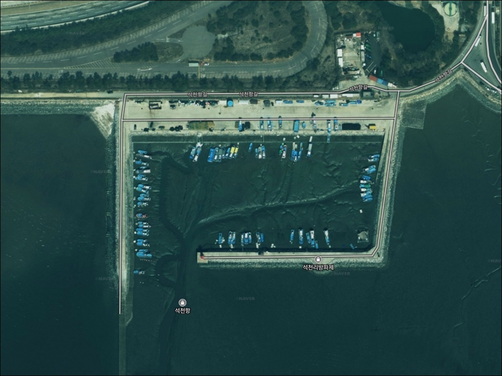
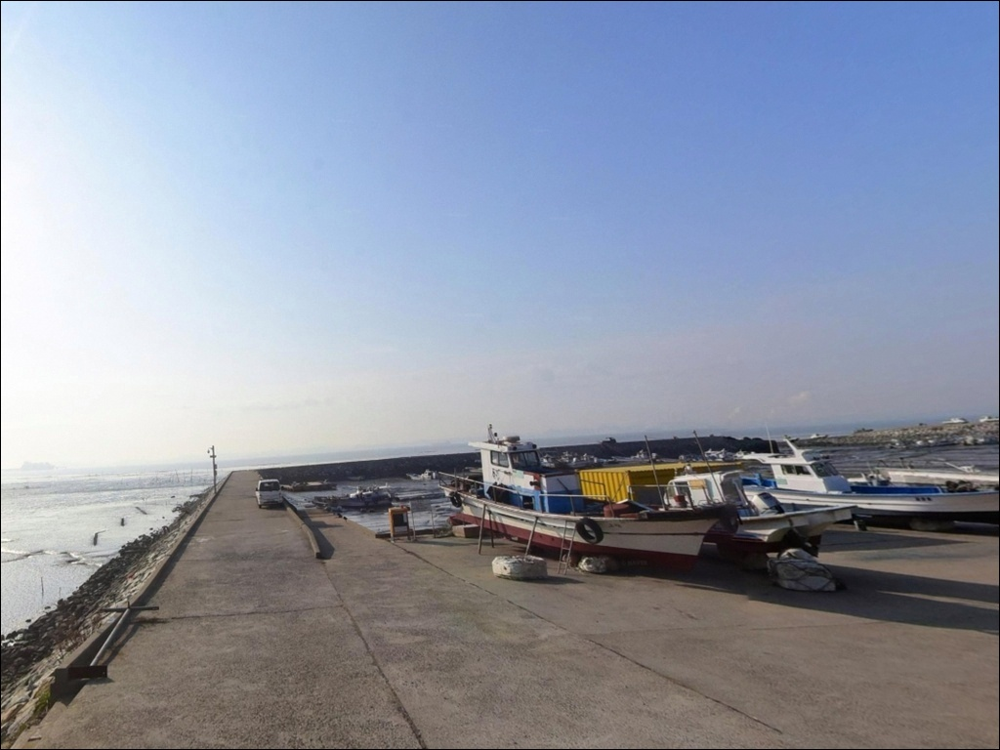
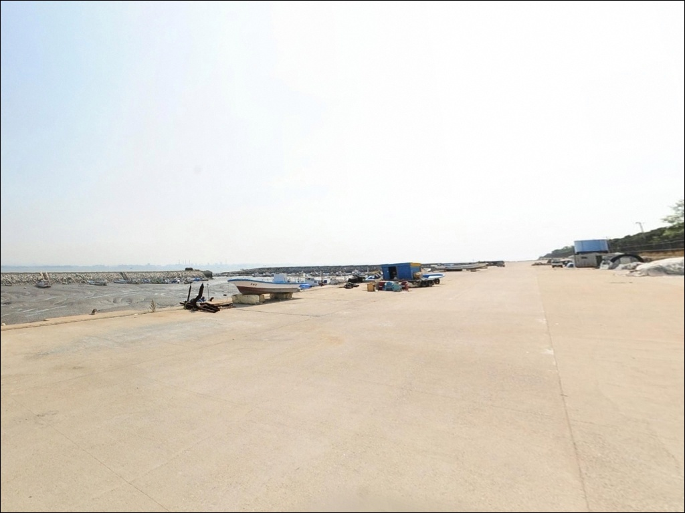
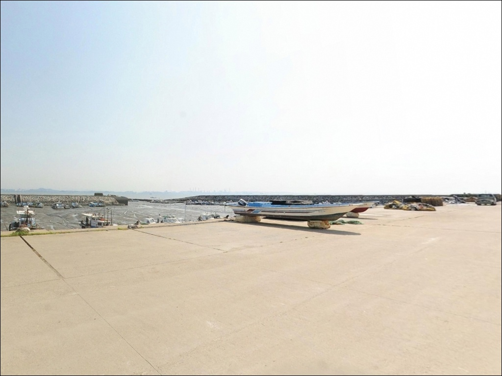
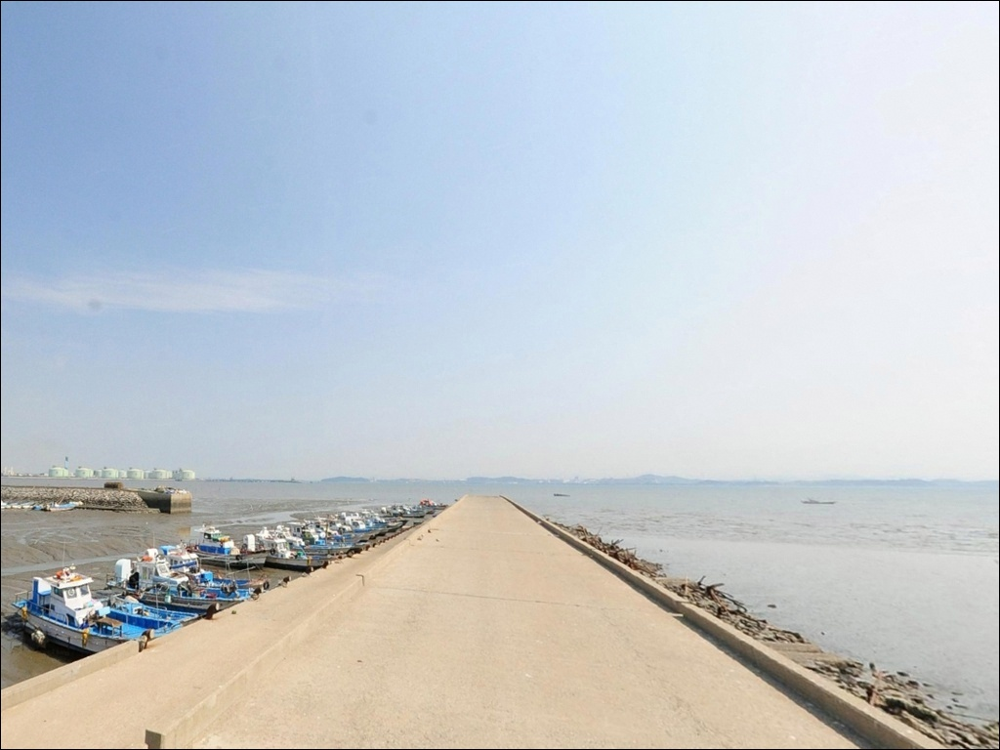
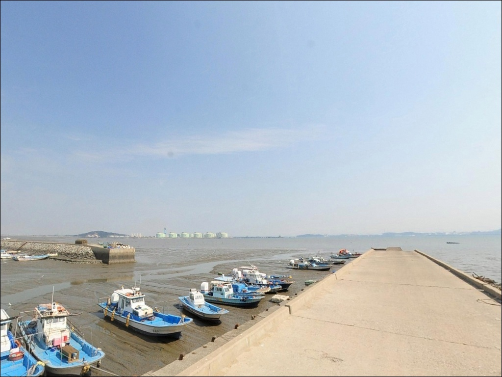
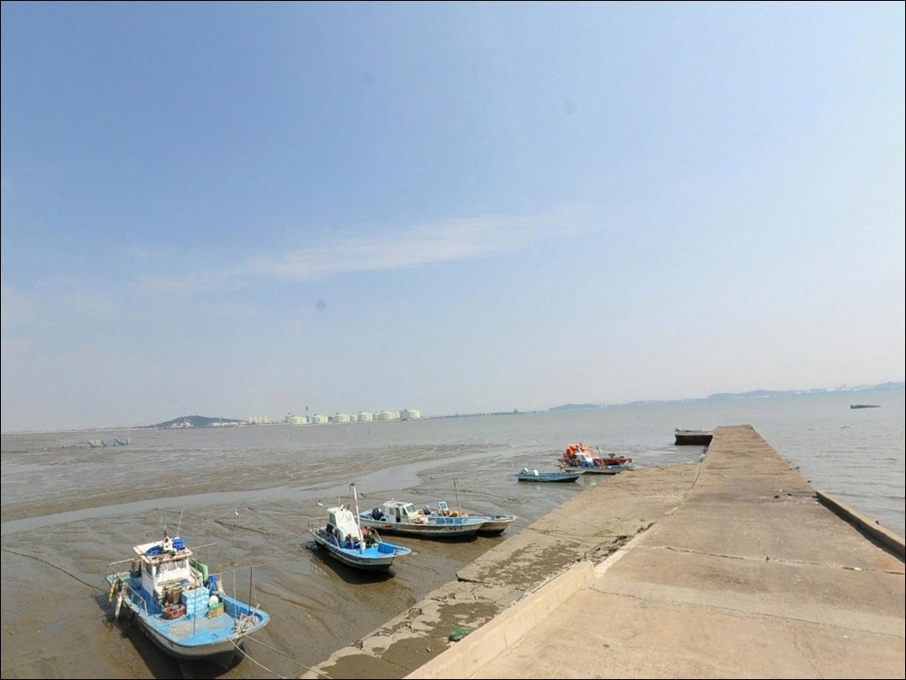
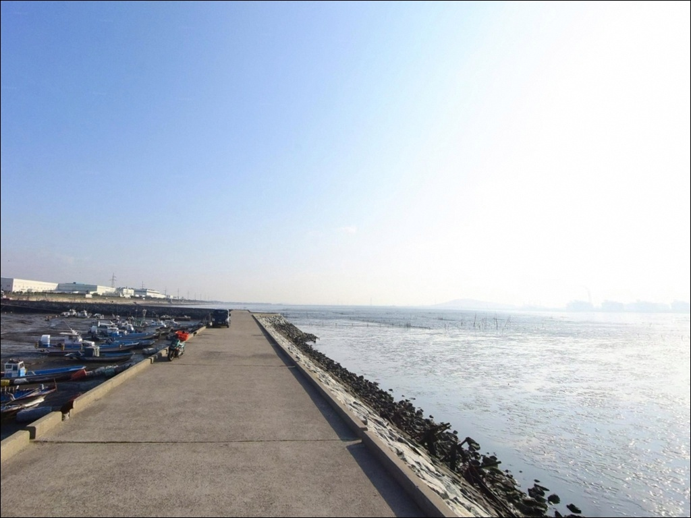
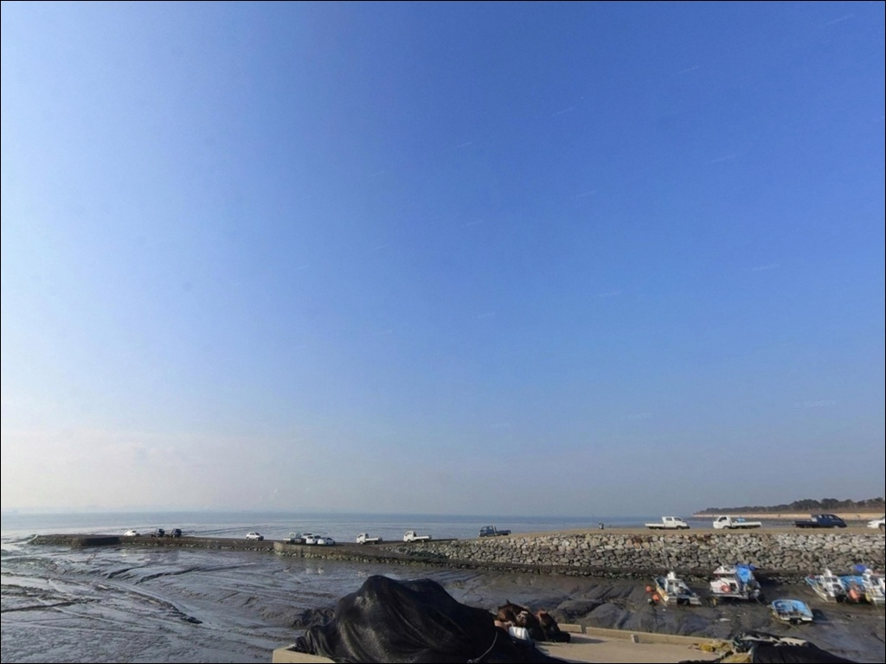

석천항, 경기 화성시 풍경이 깊은 여운을 남기는 차박, 낚시 해안


석천항
경기 화성시 우정읍 매향리 970-2
석천항을 찾는 낚시인이 가장 자주 놓치는 판단은 물때입니다.
서해 갯벌형 선착장 특성상 간조에 도착하면
선착장 아래로 갯벌이 드러나
어떤 채비를 내려도 낚시가 성립하지 않고,
들물이 차오르는 타이밍을 놓치면
포인트 진입 자체가 헛걸음으로 끝납니다.
이 글은 석천항의 지형 구조와 물때 판단 기준,
진입 여건, 낚시 방식 적합성을 중심으로 정리했습니다.
조황 단정과 특정 어종 보장은
이 글의 범위에 포함되지 않습니다.

1. 진입 동선과 포인트 접근성
기아자동차 화성공장을 끼고 해안 방향으로 진입하는 구조입니다.
공장 앞 대로까지는 접근이 무난한 편이나,
선착장 방향으로 꺾어 들어가는 마지막 구간은
도로 폭이 좁아지는 구간이 포함되어 있습니다.
소형~중형 차량 기준으로는 진입에 큰 무리가 없지만,
대형 차량이라면 위성지도로 마지막 구간을
미리 확인하고 출발하는 것이 좋습니다.
진입로 마지막 구간은 폭이 좁아
대형 차량이라면 위성지도 사전 확인이
방문 성패를 가르는 조건입니다.
회차 공간도 넉넉하지 않을 수 있어,
선착장 깊숙이 들어가기 전에
되돌아나올 여유를 두고 진입하는 것이 안전합니다.
항구 인근 공터가 주차 후보가 됩니다.
선착장에서 200~300m 거리에 차를 세우고
걸어 들어가는 형태로 보이며,
어선 정박 상황에 따라 주차 공간이
달라질 수 있으므로 어선 작업 동선을
먼저 확인한 뒤 자리를 잡는 것이 기본입니다.

2. 차박 환경과 야간 체류 여건
석천항 인근은 민가 밀집도가 낮고
주변 시설이 적은 지역이라
야간에는 조용한 분위기일 가능성이 높습니다.
다만 가로등이 충분하지 않은 환경으로 보여
개인 조명 장비는 반드시 챙겨야 합니다.
야간에는 발판 시야가 더욱 좁아지므로
헤드랜턴과 보조 랜턴을 함께 준비하는 편이 좋습니다.
이 일대는 아산만 방면으로 열려 있는 구조라
서풍 계열 바람의 영향을 받을 수 있습니다.
저녁 이후에는 출입 통제 상황이
생길 수 있다는 이용자 경험도 있으므로,
해질 무렵 이전에 현장 상황을 파악해 두는 것이 필요합니다.
야간 낚시를 계획한다면 도착 시각을
넉넉하게 잡아두는 것이 안전합니다.
석천항이 위치한 매향리 갯벌 일대는
습지보호지역으로 지정된 구역입니다.
습지보호지역 내에서는 지정 장소 외
야영과 취사 방식에 제약이 따를 수 있어,
현장 안내판을 먼저 확인한 뒤
허용 범위에 맞는 방식으로 체류 계획을 세우는 것이 선행되어야 합니다.


3. 주변 편의시설 및 인프라 현황
석천항 주변은 편의점이나 낚시용품점을
기대하기 어려운 환경입니다.
반경 3km 이내에 확정된 시설 정보가 없으므로
출발 전 완전 자급 체제로 준비하는 것이 현실적인 선택입니다.
식수, 얼음, 미끼, 여분 채비, 연료 모두
집에서 챙겨야 합니다.
반경 10km권으로 이동하면 상황이 달라집니다.
궁평항 일대에는 수산물 직판장과 편의점,
식당 등 기본 인프라가 갖춰져 있습니다.
출조 전날 궁평항 방면에서 필요한 소품을 챙긴 뒤
석천항으로 이동하는 동선이 이 권역에서 가장 효율적인 준비 방식입니다.
매향리 일대에 소규모 상점이 있다는 정보가 있으나
운영 여부와 영업시간은 현장에서 확인해야 합니다.
출조 전 연료·비상약품·수분 준비는
여유 있게 갖추고 떠나는 편이 좋습니다.

4. 방문 전 확인해야 할 준비사항
석천항 출조에서 가장 먼저 해야 할 일은
물때 확인입니다.
서해는 조차가 커서 같은 포인트라도
물때에 따라 낚시 가능 여부가 크게 달라집니다.
바다타임에서 화성 우정읍 기준 물때를 확인하고
들물 초반~만조 전후 구간을 중심으로
도착 시각을 잡는 것이 기본 전략입니다.
갯벌 선착장 특성상 이끼와 갯벌 퇴적물로
발판이 미끄러울 수 있습니다.
장화나 미끄럼 방지 신발은 반드시 챙겨야 하며,
방파제 위에서도 구명조끼 착용은 기본입니다.
야간 낚시라면 헤드랜턴 외에
보조 조명을 하나 더 준비하는 편이 좋습니다.
어항 시설 내에는 낚시 금지 안내가
설치되어 있는 경우가 있습니다.
현장 안내판을 먼저 확인하고
낚시 가능 구역에서만 채비를 펼치는 것이 기본 매너입니다.
어선 작업 구역과 낚시 자리가 겹치지 않도록
조업 방해가 되지 않는 자리 선정이 필요합니다.

5. 지형 기반 낚시 여건 분석
석천항은 아산만 방면으로 열린 갯벌형 선착장입니다.
넓게 발달한 갯벌을 가로질러
선착장이 길게 뻗는 구조로 보이며,
간조 시에는 선착장 아래로 바닥이
상당 부분 드러나는 전형적인 서해 지형입니다.
석천항은 들물 타임을 맞추지 못하면
갯벌 위에서 채비만 내리게 되는 구조입니다.
만조 전후 수심은 3~5m 수준으로 추정됩니다.
선착장 방향으로 들어오는 수로 구간에서
조류 흐름이 집중될 가능성이 있어,
이 구간이 어종 회유 통로 역할을 할 수 있습니다.
바닥은 갯벌과 잔자갈이 섞인 구조로 보이며,
밑걸림이 잦을 수 있어 여분 채비를 충분히
준비하는 것이 좋습니다.
이 지형에서 기대해볼 수 있는 어종은
망둥어, 숭어, 붕장어 등
서해 내만형 포인트에서 일반적으로 붙는 어종입니다.
석천리 앞바다에서는 꽃게, 가오리, 농어가
서식했다는 지역 기록도 있습니다.
특히 망둥어는 추석 이후 씨알이 올라오는 경향이
이 일대 서해 선착장에서 공통적으로 나타납니다.
다만 간척 이후 어패류 생태계 변화가 상당한 지역이라
최신 조황은 출조 전에 꼭 검색해 보시기 바랍니다.


6. 들물 타임에 조과가 달라지는 낚시 방식
이 포인트에서 가장 잘 맞는 방식은 원투낚시입니다.
들물이 차오르는 구간에서 채비를 멀리 던져
망둥어나 붕장어를 기다리는 방식이
이 갯벌형 지형에 자연스럽게 맞습니다.
만조 전후 2~3시간이 원투 집중 구간으로 보이며,
미끼는 청갯지렁이가 기본입니다.
바닥 변화가 있는 구간으로 봉돌 무게는
조류 세기에 맞게 조절하는 편이 좋습니다.
수로 경계가 형성되는 들물 초반에는
루어 탐색도 노려볼 만합니다.
물이 막 차오르기 시작하는 구간에서
수로 경계를 따라 지그헤드나 소프트루어로
농어를 노리는 방식이 어울리는 지형입니다.
갯벌 지형 특성상 이동 경로와 진입 시점을
미리 파악하고 접근해야 효율적입니다.
숭어는 만조 전후 수면이 잔잔해지는 구간에서
찌낚시나 떡밥낚시 방식으로 노려볼 수 있습니다.
인근 화성 서해안 선착장에서
숭어 조과가 간헐적으로 언급되는 포인트 유형으로,
석천항에서도 같은 가능성을 열어두고 접근할 수 있습니다.
낚시 방식을 한 가지로 고정하기보다
물때 단계에 따라 복수 방식을 병행하는 편이
이 포인트에서 더 효율적입니다.

7. 대안 포인트와 플랜 B 동선
석천항 물때가 맞지 않거나
현장 여건이 기대에 못 미칠 때
첫 번째로 이동할 수 있는 곳은
매향리 선착장(고온항)입니다.
동일 해안선에 위치한 잠수선착장 구조로,
선착장 길이가 길어 자리 선택 폭이 넓은 편입니다.
단, 어항 시설 내 낚시 가능 구역 여부는
현장 안내판으로 반드시 확인해야 합니다.
같은 화성 서해안에서 조건이 더 안정적인 포인트를
찾는다면 궁평항이 좋은 선택입니다.
국가어항으로 지정된 궁평항은
낚시 피어를 운영하고 있어 발판이 안전하며,
수심도 고르게 확보되는 편입니다.
놀래미, 우럭, 붕장어, 숭어 등
다양한 어종을 복수 방식으로 공략할 수 있고,
편의점과 수산물 직판장이 인접해 있어
출조 전 준비 동선으로도 활용하기 좋습니다.
이 일대를 처음 방문한다면
궁평항을 기점으로 잡고
석천항을 병행 탐색하는 동선이 가장 효율적입니다.
석천항 단독 방문 전에
이 방식으로 한 번 현장 감을 잡아두면
다음 출조를 훨씬 계획적으로 운용할 수 있습니다.

물때 하나가
석천항 출조의 성패를 가릅니다
한적한 서해 선착장에서 원투채비로
망둥어나 붕장어를 기다리는 낚시를 즐기는 분이라면
석천항의 갯벌형 지형 조건은 잘 맞는 환경입니다.
사람이 적고 조용하며,
넓은 발판 덕에 캐스팅 자체에 집중하기 좋은
포인트이기도 합니다.
반면 물때 계산 없이 찾아가거나
간조 시간대에 도착하면
드러난 갯벌 앞에서 채비만 손에 쥐는
상황을 맞닥뜨릴 수 있습니다.
물때 확인, 현장 안내판 선확인, 자급 준비,
이 세 가지를 갖추고 간다면
조용히 집중할 수 있는 포인트가 됩니다.
차박 여행자라면 매향리 갯벌 습지보호지역 야영 가능 여부를
현장에서 먼저 확인해야 합니다.
허용 범위 안에서라면
서해 낙조가 길게 이어지는 선착장 끝에서
낚시와 하룻밤을 조용히 엮는
출조가 될 수 있습니다.